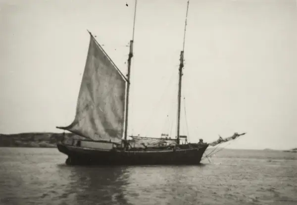
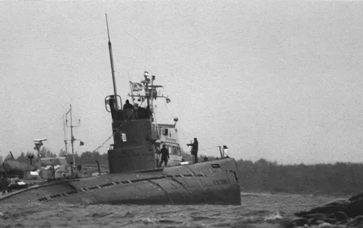
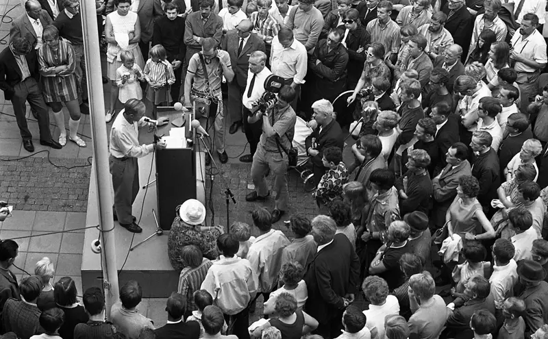
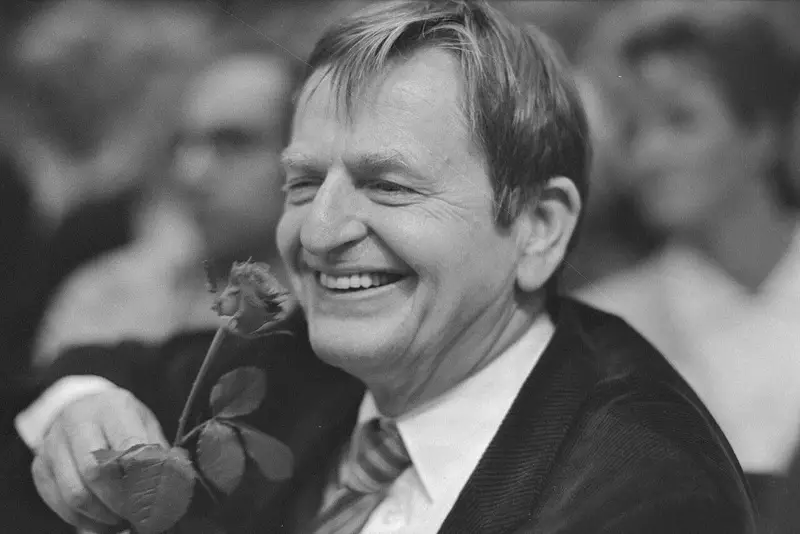
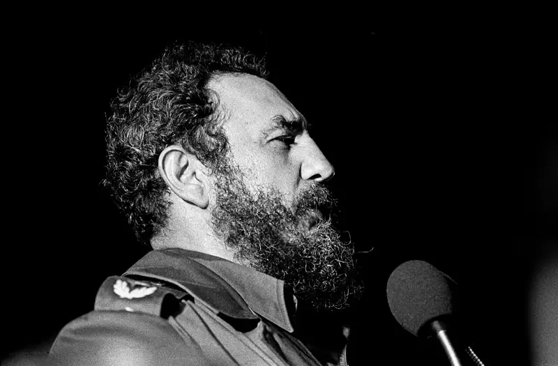
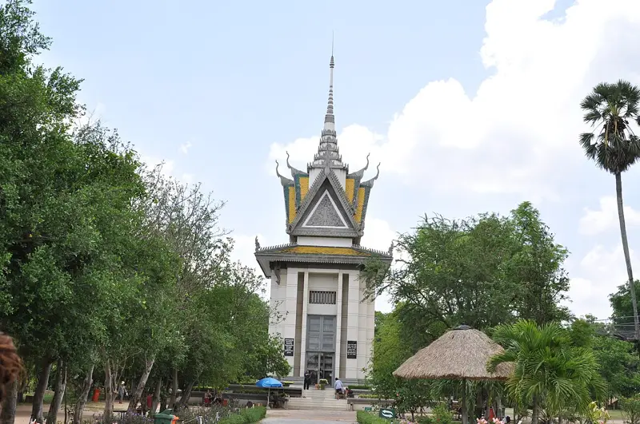
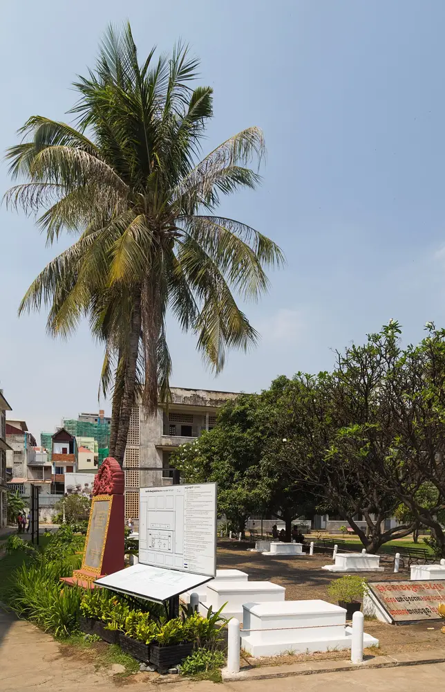
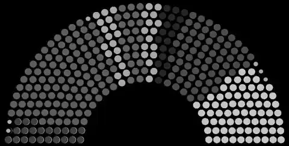
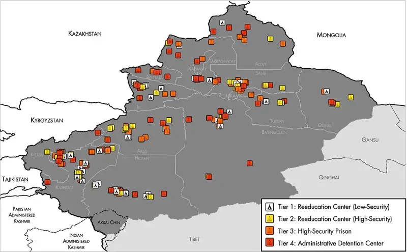

Minsk 2020 – unga mot diktaturen →
För ettfrittSverige.
Vi är unga som säger nej till kommunismen.
Bli medlem – gratisBakgrundsbilder: protester i Minsk 2020, ester på flykt till Sverige 1944, protester i Hongkong 2019, flyktfartyget Ellen i Dalarö 1944, protester på Kuba 2021, Baltiska kedjan 1989 och Stockholm i dag.
INFORMERA. GRANSKA.
BYGG NÄTVERK.
Ungdom mot kommunism (UMK) är en ungdomsorganisation som verkar mot kommunismens inflytande i samhället, i kampen för ett bättre Sverige.
Läs mer om oss
Vår kärna är på universitet och högskolor. Där driver våra medlemmar opinion i lokala campusgrupper och motarbetar kommunistiska idéer bland studenter.
Vi informerar om vad kommunistiska regimer faktiskt har gjort, granskar partier, organisationer och opinionsbildare med kopplingar till kommunistisk ideologi, och arrangerar föreläsningar, studiecirklar och debatter.
Vi bygger på konservativa värderingar, står fria från partier och tar avstånd från alla rörelser som går emot kampen mot kommunismen.
Frihetens historia börjar vid Östersjön.


Historiegalleri
Det de inte vill att du ska minnas.
Svep för att bläddra

1919–1990
Moskvas svenska sektion
Sveriges Kommunistiska Parti bildades 1919 som en sektion av Komintern. 1967 bytte partiet namn till Vänsterpartiet kommunisterna (VPK) – ordet ”kommunisterna” behölls till 1990. Säkerhetstjänsterna misstänkte länge sovjetisk finansiering; enligt den statliga utredningen bedömdes att SKP ”sannolikt fick främmande subsidier”.
Källa: SOU 2002:87, Säkerhetstjänstkommissionen ↗Läs om SKP och Komintern →1944
Flykten över Östersjön
När Röda armén återvände flydde tusentals ester och letter i små båtar till Sverige. De visste vad sovjetstyret innebar – deportationerna 1941 hade redan drabbat deras grannar.
Källa: Britannica: Estonia ↗Läs om flykten 1944 →

1975
Palme hos Castro
I juni 1975 gjorde statsminister Olof Palme ett officiellt besök på Castros Kuba. Han talade inför ett massmöte i Santiago de Cuba med diktatorn vid sin sida – i ett land utan fria val, fri press eller oberoende fackföreningar.
Källa: Stenberg & Dahlgren, ”Olof Palmes statsbesök på Kuba 1975”, Lunds universitet 2006 ↗Läs om Kuba →
1975–79
Dödens fält
Röda khmererna tömde städerna och drev befolkningen till arbetsläger. Omkring 1,7 miljoner människor – runt en femtedel av Kambodjas befolkning – dog av avrättningar, svält och tvångsarbete.
Källa: Yale University, Cambodian Genocide Program ↗Läs om Röda khmererna →
1978
Svenskarna som såg en utopi
I augusti 1978 reste en delegation från Svensk-kampucheanska vänskapsförbundet – bland dem Jan Myrdal och Gunnar Bergström – runt i Pol Pots Kampuchea och åt middag med Pol Pot. Hemma i Sverige berättade de om ett land på väg mot socialismen. Bergström har senare bett om ursäkt; Myrdal ändrade aldrig sin hållning.
Källa: Forum för levande historia (2009); IPS (2008) ↗Läs om delegationen 1978 →1981
U 137
Den 27 oktober går en sovjetisk ubåt på grund i Gåsefjärden, inne i ett svenskt militärt skyddsområde utanför Karlskrona. Hotet var aldrig abstrakt – det låg i våra egna vatten.
Källa: Marinmuseum ↗Läs om U 137 →1989
Kedjan som bröt imperiet
Omkring två miljoner människor tog varandras händer i en kedja på cirka 675 km genom Estland, Lettland och Litauen. Två år senare var länderna fria och Sovjetunionen upplöst.
Källa: UNESCO Memory of the World ↗Läs om Baltikum →
2021
”Ett kommunistiskt samhälle”
Vänsterpartiets ungdomsförbund Ung Vänster skriver i sitt principprogram:
Källa: Ung Vänsters principprogram (2021); SVT Nyheter 19/2 2021 ↗Läs om Ung Vänster →Vårt mål är ett klasslöst samhälle, fritt från förtryck – ett kommunistiskt samhälle.
Förbundet säger sig samtidigt ta avstånd från Kina och Nordkorea – men har valt att behålla ordet.
I dag
Kommunismen lever
Kina har internerat uigurer i läger i Xinjiang (FN:s människorättskontor, 2022). FN:s undersökningskommission fann brott mot mänskligheten i Nordkorea (2014). På Kuba fängslades hundratals demonstranter efter protesterna i juli 2021 (Human Rights Watch).
Källa: OHCHR 2022; FN:s undersökningskommission 2014; HRW ↗Läs om uigurerna →2026
Vi är unga som säger nej till kommunismen.
Historien är dokumenterad. Frågan är vem som vågar säga det högt. Det gör vi.
Bli medlem – gratis
100 miljoner dödades av kommunistiska regimer under 1900-talet, enligt Svarta boken om kommunismen (Courtois m.fl., 1997).
Gå med i dag.
- INFORMERA om regimernas brott
- GRANSKA med källor, inte rykten
- DEBATTERA på campus
- BYGG nätverk i Sverige och Europa
Det tar en minut och kostar ingenting. Du kan bli medlem från 16 år.
Bli medlem – gratis